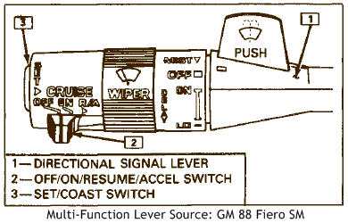
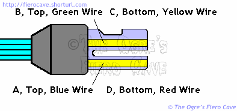
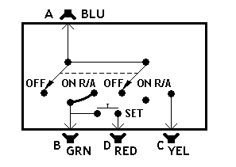

Go Home
Site Map
Go Home
Site Map
Cruisin’ right along....
I'll add more to this when I have time. It will probably not ever cover the complete system.
Note: If you have 87-88 L4, you can use an ECM Scanner to test the MFL. The DIS ECM will report all the switches operation except the brake pedal switch for the dump valve. Besides checking switch condition, the scanner will tell you if anything else in the switch wiring is fubar.
Multi-Function Lever

The Multi-Function Lever contains the switches that operate the Cruise Control system. Note that the MFL does not contain any other switches. The actual wiper, headlight beam select, and turn signal select switches are all inside the steering column.
The Cruise switches are pretty easy to test. Almost any Ohmmeter will work.
C235, shown left, is about the easiest place to test at. This small connector is along the steering column. It's easier to get at C235 if you drop the trim panel from under the steering column.
These tests will usually detect a dead switch in the lever but may not detect a switch with intermittent dropout! Work each test several times. The meter should always drop to the same point. Wiggle the lever while doing them as well. It may help you detect damage to the wiring.
Connect the meter across terminals A and B. Turn on the slide switch. The meter should drop to Zero. Now push the slide to Resume/Accel and release it. The meter should not move when you do that.
Now connect A and C. You should get Zero on the meter Only when you push the slide to R/A.
Finally, connect between A and D. with the slide in the On position, press the Set button. The meter should go to zero.
Here's the schematic of the MFL switches. There's not much to the thing. Unlike the HL Beam Select and the Wiper switch that are down in the column, these switches are inside the lever head. They aren't the most rugged things on earth.
The switches are prone to both wear and dirt issues. Fortunately the same MFL is used in many GM models and are plentiful both new and used.
The MFL isn't made so it can be repaired. A few people have managed to clean the switches when they acted up. In most cases you are just better off replacing the whole MFL. To make that easier, tie a string to C235 before you pull the wire out. Then use the string to pull the new wire down the column.
Those of you with access to an oscilloscope can use it to test the switches. You need the scope and a battery. A handy battery is to get a 9 volt "Transistor" battery and a clip from Radio Shack. The trace should jump and stay when you push the switch. If it bounces around as you hold the switch then the switch is shot. (Most volt and ohmmeters don't have rapid enough response for this test but you can try it with them as well.)
Parts
The following parts for the column are confirmed available thru MotorMite's HELP! Series.
Servo Notes
Some people have had luck cleaning the valves on the servo. It's worth a shot. In most cases you need to replace the servo.
Vacuum Canister
Some people repair the metal one. Unless you need to do that for show reasons, just find an equivalent plastic vacuum ball. You can get them from almost any car made. There are more notes on this in the vacuum leak article.
Servo Adjustment
Notice on the servo there is a plate with a bunch of holes. Use the hole that allows the servo to completely rest with a slight slack in the cable.
Dump Valve
There is a redundant dump valve in most cruise systems. This valve is mounted near the servo and is on an independent circuit operated by a switch on the brake pedal. (There are two brake switches for most cruise systems.) Don't forget to check this valve and its wiring if the servo isn't holding vacuum. To temporarily disable this valve, plug the large port on the servo.
You should NOT operate the car long term without this valve. The valve makes the servo dump quickly when the brake pedal is pushed. Without it servo release is greatly slowed.